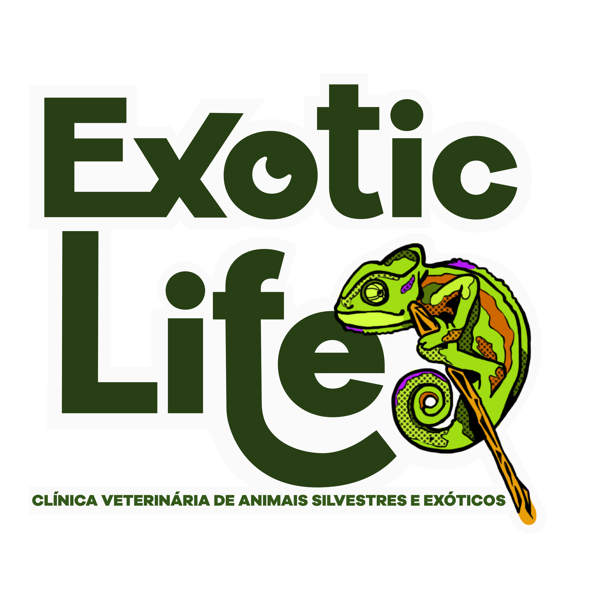

National WildLife Survival
Doações, adoções, arrecadações e resgate de animais silvestres.
QUEM SOMOS NÓS ?
National WildLife Survival muito mais do que uma simples organização. Somos uma comunidade de amantes de animais de estimação e da vida selvagem, dedicados a unir corações e patas para fazer a diferença na vida dos animais resgatados e dos nossos companheiros de quatro patas. Nossa missão é clara e nobre: proporcionar um lar amoroso para cada animal desabrigado, garantindo que eles tenham a chance de viver vidas felizes e saudáveis, seja na natureza ou ao nosso lado.
Filas para adoção
Filas para adoção de animais silvestres resgatados.
Doe e salve 7 vidas
Centro de arrecadação filantrópico, doe e salve!.
FAÇA SUA PARTE!
Em parceria com o INSTITUTO DANIEL BERTONI que é responsável pelo resgate dos animais arrecadamos fundos para os cuidados médicos e custos com os regates.No coração de nosso centro de arrecadação filantrópico, a generosidade ganha vida. Cada doação que recebemos tem o poder de transformar vidas, não uma, não duas, mas sete vidas de uma só vez.

Centro médico
Centro de atendimento médico filantrópico.
